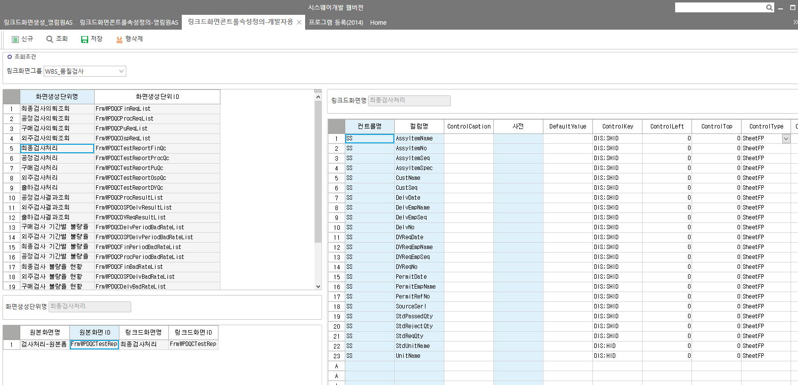

링크드화면 보기
링크드화면콘트롤속성정의-개발자용
SELECT Z.LinkGroupName
,Z.LinkGroupID
, A.LinkGroupSeq AS LinkGroupSeq -- 링크화면그룹코드
, A.OrgPgmSeq AS OrgPgmSeq -- 원본화면내부코드
, B.LinkCreateSeq AS LinkCreateSeq -- 링크화면생성내부코드
, B.PgmSeq AS PgmSeq -- 링크화면내부코드
, C.Caption AS OrgCaption -- 원본화면이름
, C.PgmId AS OrgPgmId -- 원본화면ID
, D.Caption AS Caption -- 링크화면이름
, D.PgmId AS LinkPgmId -- 링크화면ID
FROM _TCALinkPgmGroup AS Z
JOIN _TCALinkOrgPgm AS A WITH(NOLOCK) ON A.LinkGroupSeq = Z.LinkGroupSeq
JOIN _TCALinkCreatePgm AS B WITH(NOLOCK) ON A.LinkGroupSeq = B.LinkGroupSeq AND A.OrgPgmSeq = B.OrgPgmSeq
LEFT OUTER JOIN _TCAPgm AS C WITH(NOLOCK) ON A.OrgPgmSeq = C.PgmSeq
LEFT OUTER JOIN _TCAPgm AS D WITH(NOLOCK) ON B.PgmSeq = D.PgmSeq
WHERE C.PgmId LIKE '%%' -- 원본프로그램
AND D.PgmId LIKE 'FrmWPDQCTestReportFinQc' -- 링크드프로그램
